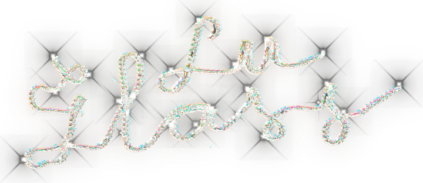
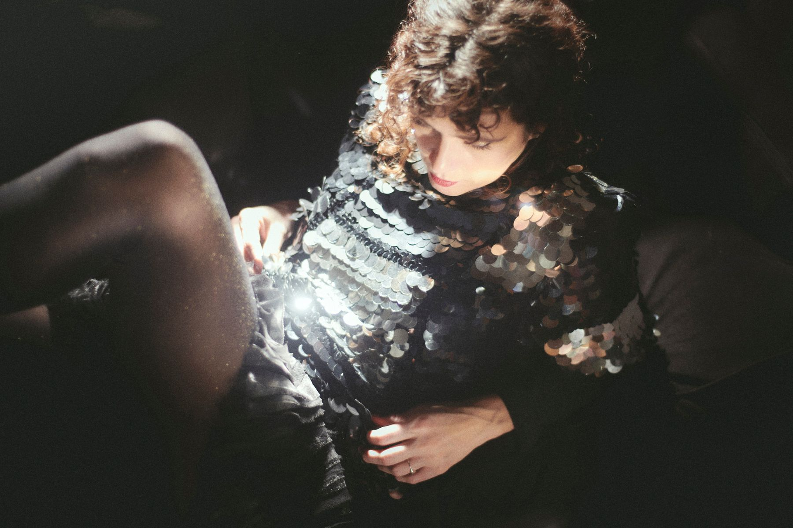

● RECCH 01
● RECCH 01

NUEVO DISCO · EN LA RIBERA DE LA NOCHE PLUTÓNICA
VolumenBrilloColor
CANAL 1 · ÚLTIMO LANZAMIENTO
La noche plutónica

Un disco escrito en la orilla de una noche que no termina. Sintetizadores que llegan de otra década, beats mínimos y un corazón roto que brilla como lentejuela.
Producido con Antü Filardi Sabin · Mezcla Juan Stewart · Mastering Ariel Schlichter, Berlín · Puddle Label, 2026
CANAL 2 · VIDEOS
En pantalla
CANAL 3 · ESCUCHAR
Sintonizá
CANAL 4 · LU GLASS
Quién transmite

Lu Glass hace canciones con máquinas viejas y palabras exactas.
Desde El Rayo (2016) viene armando paisajes de sintetizador para historias de amor que no terminan bien. Abrió para The Radio Dept., tocó en Primavera Sound Buenos Aires y hoy suma a Paula Díaz Mendilharzu y su arsenal de Roland, MPC y Minilogue.
CANAL 5 · CONTACTO
Escribile
Shows, festivales, ciclos y prensa.
lucilaglass@gmail.comFIN DE LA TRANSMISIÓN · LU GLASS · @luglassdreams